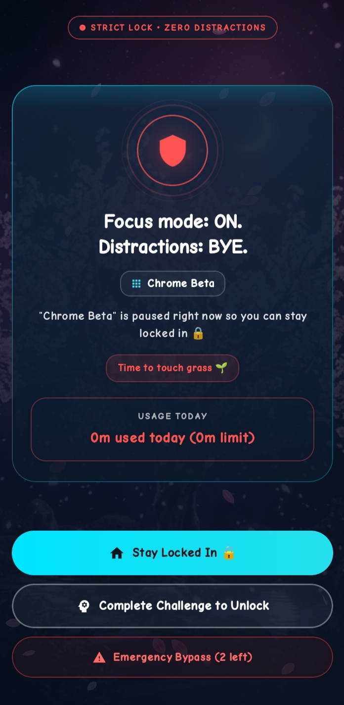

Features
FocusLock is a focused set of tools. Here is what is in the app today.
App time limits
Choose apps and set a daily allowance for each. You can also use schedules to restrict apps at set times, and Focus mode to lock distractions for a session of your chosen length.
Automatic app locking
FocusLock uses Android Accessibility to see which app is in front, then shows a block screen over it when the limit is reached. Optional Escape Prevention helps stop impulsive force-stops and uninstalls while protection is on.

Focus and unlock challenges
Four ways to earn extra access: a mental math problem, a patience countdown, typing a sentence exactly, or your own PIN. Emergency unlocks give short access when something is truly urgent.
Usage tracking
FocusLock reads Android usage access to show screen time, most distracting apps, insights, goals, streaks and achievement cards you can share.
Notifications
Get a heads-up when you are close to a limit, and an alert when an app is locked. During Focus mode, FocusLock can silence other notifications with Do Not Disturb, if you allow it.
Customization
Pick from six animated background themes: Cherry Blossom, Sakura Lake, Autumn Leaves, Cyber Rain, Aurora Forest and Deep Ocean. The app supports English, Bangla, Spanish, French, Arabic and Portuguese.
Privacy
Your usage data is stored on your device. You can export a backup file or restore one from Settings. Read the full privacy policy.